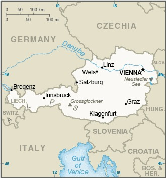

Genel Bilgiler
Avusturya, Orta Avrupa’da yer alan federal bir cumhuriyettir. Başkenti Viyana’dır. Yaklaşık 9 milyon nüfusa sahiptir. Resmî dili Almanca’dır ve para birimi Euro’dur. Avusturya Avrupa Birliği üyesidir. Tarih boyunca Habsburg Hanedanı ve Avusturya-Macaristan İmparatorluğu ile önemli bir kültürel ve siyasi rol oynamıştır.
Avusturya, kuzeyde Çekya ve Almanya, doğuda Slovakya ve Macaristan, güneyde Slovenya ve İtalya, batıda İsviçre ve Lihtenştayn ile çevrilidir. Yüzölçümü yaklaşık 83.879 km²’dir. Ülkenin büyük bölümü Alp dağlarıyla kaplıdır. Önemli nehirleri Tuna, Inn ve Mur’dur.
Başkent: Viyana
Kıta: Avrupa
Yüzölçümü: 83.879 km²
Nüfus (2025): 8.932.000

Bayrak Anlamı: Avusturya bayrağı yatay üç eşit şeritten oluşur: kırmızı, beyaz ve kırmızı. Beyaz şerit saflığı ve barışı, kırmızı şeritler cesareti ve fedakârlığı temsil eder. Bayrak 13. yüzyıldan beri kullanılmakta olup Avusturya’nın en eski ulusal sembollerinden biridir.
Avusturya Haritası
Ekonomi
Avusturya ekonomisi gelişmiş ve yüksek gelirli bir yapıya sahiptir. Sanayi, hizmetler ve turizm önemli sektörlerdir. Sanayi alanında makine, metal, kimya ve otomotiv öne çıkar. Tarımda süt ürünleri ve tahıl üretimi yaygındır. Hizmet sektörü, özellikle turizm ve finans, ülke ekonomisinin büyük kısmını oluşturur. Avusturya ayrıca kültür, eğitim ve yenilikçilik alanlarında da güçlüdür.
| Yıl | İhracat (Milyar $) | İthalat (Milyar $) |
|---|---|---|
| 2019 | 178 | 182 |
| 2020 | 165 | 170 |
| 2021 | 190 | 195 |
| 2022 | 200 | 205 |
| 2023 | 205 | 210 |